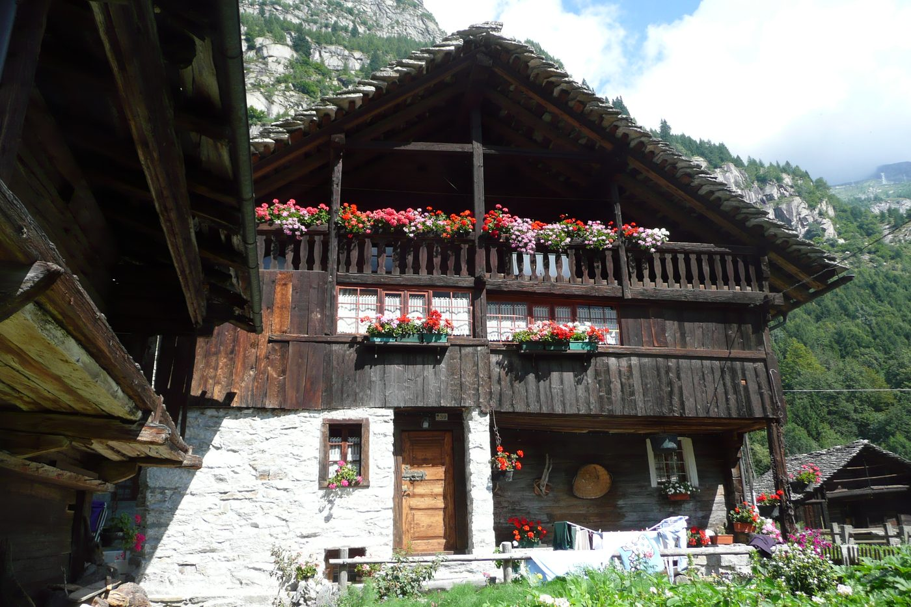

Domande frequenti
Gite in montagna, famiglie, coppie, senior, weekend Macugnaga Monte Rosa e arrivo da Milano, Varese e Novara.
Come si prenota un’esperienza?
Usa la barra di ricerca date in alto su ogni pagina oppure vai a Esperienze, scegli l’attività e completa il pagamento. Riceverai subito l’email di conferma con info e contatti delle guide.
Quali metodi di pagamento sono accettati?
Pagamento sicuro online con carta di credito e PayPal.
Macugnaga è adatta come montagna con i bambini?
Sì: tra le montagne per famiglie più accessibili del Monte Rosa. Vedi Famiglie e le schede delle attività del portale di prenotazione.
È una meta in montagna per coppie e gruppi di amici?
Sì: silenzi, panorami sul Monte Rosa e esperienze a contatto con la natura per un weekend romantico o una fuga tra amici. Vedi Coppie e Weekend.
Macugnaga è una località ideale per turisti senior?
Sì: ritmi soft, sentieri accessibili, benessere nei boschi e visite culturali. Approfondisci su Senior.
Ci sono escursioni e passeggiate a Macugnaga?
Dal Dorf ai boschi e ai sentieri sotto il Monte Rosa: passeggiate ed escursioni soft. Prenota outdoor su Esperienze.
È ancora montagna vera, con luoghi caratteristici e antiche baite?
Sì: architettura tradizionale, antiche baite, bel paesaggio e panorami sul Monte Rosa. Scopri di più su Scopri Macugnaga.
È la montagna vera, vicina a Milano, Novara, Varese e città della pianura?
Sì: circa 2 h da Milano, 1,5 h da Novara e Varese; anche Torino, Pianura Padana e Svizzera. Dettagli su Fuga dalla città.
Quali idee weekend in montagna offrite?
Pernottamento, cucina locale, esperienze a contatto con la natura, Casa Walser e miniera d’oro. Guida su Weekend Macugnaga Monte Rosa.
Che esperienze a contatto con la natura si trovano?
Passeggiate, forest bathing, escursioni soft e benessere nei boschi — montagna vera, senza alpinismo tecnico. Prenota online.
Qual è la stagione migliore?
Tutte: estate fresca e benessere, autunno colorato, inverno magico. Consulta il calendario di prenotazione per le disponibilità.
Dove posso dormire?
Hotel, B&B e case vacanza sul portale Macugnaga-Monterosa · Dove dormire. Questo portale di prenotazione si occupa delle esperienze.
Posso salire in seggiovia o funivia?
Sì, quando gli impianti sono in esercizio: seggiovie Belvedere/Burki e funivia verso Alpe Bill e Passo Moro (~2870 m). Dettagli e aperture su Funivia e seggiovia; stato live su macugnagamonterosaski.com.
Chi gestisce le esperienze?
Operatori locali autorizzati. Sistema di prenotazione online sviluppato da Lem s.r.l. per Unione Montana Valli dell’Ossola. Vedi Come funziona.
Chi è responsabile delle attività prenotate?
Informazioni, prezzi e disponibilità riportati dal portale di prenotazione sono indicati dai gestori delle esperienze. Con la prenotazione online riceverai i contatti diretti degli organizzatori, da contattare per ogni ulteriore informazione. Lem s.r.l. non è in alcun modo responsabile della gestione delle attività. Vedi anche Credits.
Questo sito è per alpinismo tecnico?
No: il portale di prenotazione è dedicato a esperienze accessibili per tutti. Per alpinismo dedicato esistono portali specifici.
Come posso contattarvi?
macugnagabooking@gmail.com — dopo la prenotazione riceverai anche i contatti diretti delle guide.
Cosa visitare oltre alle attività?
Casa Museo Walser, miniera d’oro, eventi di paese, rifugi e impianti. Scopri di più su Scopri Macugnaga.
È adatta a soggiorni lunghi o lavoro remoto?
Sì: weekend, settimane e soggiorni lunghi in un contesto tranquillo vicino alla Pianura Padana e alla Svizzera. Vedi Fuga dalla città.